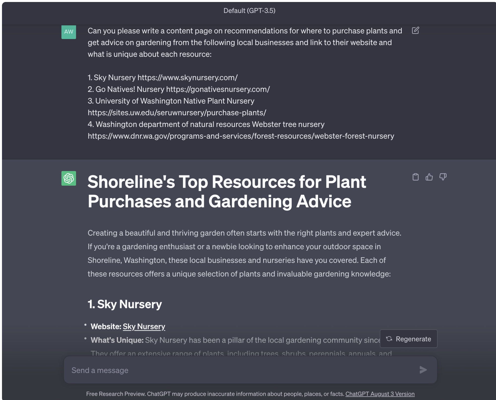

About This Website
Artificial Intelligence as a Web Designer's Co-Pilot
Artificial intelligence was used to create a majority of the content on this website. In the coming years, AI will become an integrated presence in our technological lives, whether we like it or not. This website serves as a living case study of how professionals in the tech industry have started to integrate AI as a co-pilot for web content generation.
Midjourney was used to create 90% of the imagery, while ChatGPT 3.5 was used to create 80% of the written content. The content was generated utilizing AI command prompts.

AI prompts are input instructions or queries provided to artificial intelligence (AI) models like GPT-3.5 to generate human-like text-based responses. These prompts serve as a way for users to interact with AI systems and receive specific information, generate content, or perform various tasks. Here's a short summary of how AI prompts work:
1. Input Instruction: Users provide a prompt in the form of a text input or query to the AI model. This prompt can be a question, a statement, or a request for information or content.
2. Processing and Understanding: The AI model, such as GPT-3.5, processes the provided prompt using a deep neural network. It attempts to understand the context, language, and intent behind the input.
3. Response Generation: Based on its training data and the patterns it has learned, the AI model generates a text-based response to the prompt. The response can range from a single sentence to a lengthy article, depending on the complexity of the request.
4. Output Delivery: The AI model delivers the generated response to the user, who can then review, modify, or use the output as needed. This response can be used for various purposes, such as answering questions, drafting content, providing recommendations, or even coding assistance.
5. Iterative Process: Users can refine or modify their prompts to obtain more accurate or specific responses. This iterative process helps in fine-tuning the AI's output to meet the user's requirements.
Ethical Concerns, Information Privacy, and the Spread of Misinformation
The last year has seen a massive leap forward in AI technology capability. While AI technology is not a new research area, what is new is the rapid evolvement and proliferation of it. Human-artifical intelligence interactions are evolving at a pace never seen before.
As with any rapidly adopted technology, there are growing pains. What we have seen so far includes ethical concern for access to information that has the potential to harm people, major corporations updating terms of service to allow for use of large data sets to train AI models, and the wildfire spread of misinformation that makes it hard to discern what is real. It is a literal wild west.
Think About the Greater Good
But, rest assured that there are humans who seek to leverage the benefits of AI, while also designing guardrails to reduce harm.
There are ALOT of people who are researching and discussing this technology topic. Whether it is a medical research hospital training AI models to detect cancer tumors, or a consortum of professionals developing ANSI design standards, humans will learn and advocate for the benefits of the greater good.